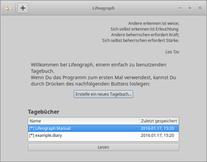
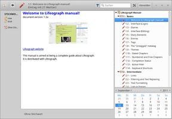
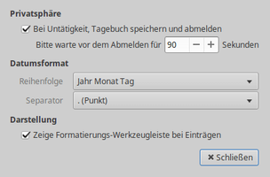

Lifeograph
Dieser Artikel wurde für die folgenden Ubuntu-Versionen getestet:
Ubuntu 16.04 Xenial Xerus
Ubuntu 14.04 Trusty Tahr
Zum Verständnis dieses Artikels sind folgende Seiten hilfreich:
Lifeograph  ist ein digitales Notizbuch, das Einträge standardmäßig chronologisch sortiert. Es kann damit beispielsweise als Reisejournal oder Tagebuch genutzt werden. Das plattformübergreifende Programm ist neben Linux auch für Windows und Android verfügbar. Allerdings ist die Linux-Version am weitesten entwickelt und bietet die meisten Funktionen.
ist ein digitales Notizbuch, das Einträge standardmäßig chronologisch sortiert. Es kann damit beispielsweise als Reisejournal oder Tagebuch genutzt werden. Das plattformübergreifende Programm ist neben Linux auch für Windows und Android verfügbar. Allerdings ist die Linux-Version am weitesten entwickelt und bietet die meisten Funktionen.
Merkmale:
Mit AES verschlüsselte oder unverschlüsselte Tagebücher
Textformatierungen: fett, kursiv, markiert oder
durchgestrichenAutomatisch formatierte Titel und Untertitel (wie bei Gnote bzw. Tomboy)
Rechtschreibprüfung
Suchen/Filtern und Ersetzen von Text
Integrierter Papierkorb
Nutzung von Schlagwörtern (Tags)
Favoriten
Verknüpfungen (Links) zwischen Einträgen und zu Internetadressen
Automatisches Schließen (optional; für den Fall, dass man ein geöffnetes Tagebuch vergessen hat)
Automatische Sicherungen
In der Konzeption sehr ähnlich ist das Programm RedNotebook. Der Hauptunterschied ist die bei Lifeograph integrierte Verschlüsselung.
Installation¶
 Lifeograph ist in den offiziellen Paketquellen enthalten. Folgendes Paket muss installiert werden [1]:
Lifeograph ist in den offiziellen Paketquellen enthalten. Folgendes Paket muss installiert werden [1]:
lifeograph (universe)
 mit apturl
mit apturl
Paketliste zum Kopieren:
sudo apt-get install lifeograph
sudo aptitude install lifeograph
Verwendung¶
Bei Ubuntu-Varianten mit einem Anwendungsmenü findet man einen Programmstarter unter "Zubehör -> Lifeograph" [2].
Ein neues Tagebuch wird oberhalb der Übersicht vorhandener Tagebücher mit der Schaltfläche + erstellt. Neben einem Namen und dem Speicherort kann man angegeben, ob das Tagebuch verschlüsselt werden soll. Falls ja, aktiviert man die entsprechende Option und gibt ein Kennwort ein.
|  |
| Programmstart |
|  |
| Integriertes englisches Handbuch |
Die erste Zeile eines Eintrags wird automatisch als Titel formatiert. Benötigt man einen Untertitel oder eine Zwischenüberschrift, rückt man die betreffende Zeile mit einem Leerzeichen ein. Alle weiteren Zeilen sind normaler Text, der auf Wunsch mit einer Formatierung versehen werden kann. Diese kann entweder klassisch (markieren und formatieren) oder mit speziellen Platzhaltern vorgenommen werden.
| Platzhalter für Textformatierungen | |
| Beispiel | Ergebnis |
*Text* | fett |
_Text_ | kursiv |
#Text# | markiert |
=Text= | |
[[Text]] | Kommentar, Anmerkung oder Fußnote |
Ferner können noch nicht nummerierte Listen und der Bearbeitungszustand eingefügt werden (siehe auch Aufgaben). Andere Listen oder Tabellen sind nicht möglich.
Beim Beenden des Programms werden geöffnete Dateien automatisch gespeichert. Sie sind an der Endung .diary zu erkennen.
Verknüpfungen¶
Ein zentrales Element eines digitalen Notizbuchs sind Verknüpfungen (Links). Diese können auf bereits vorhandene Einträge oder externe Elemente wie Bilder oder Internetadressen verweisen. Bereits vorhandene Einträge können via "Ziehen und Fallenlassen" (Drag'n'Drop) aus der Übersicht am rechten Rand des Programmfensters eingefügt werden. Alternativ können Datumswerte benutzt werden.
Internetadressen (URLs) werden automatisch verknüpft. Voraussetzung ist allerdings die Angabe des jeweiligen Netzwerkprotokolls: http:// oder https:// für Internetseiten, mailto:// für E-Mail-Adressen usw.
Bilder und andere Dateien können mit der Angabe von file:// verknüpft werden. Bei Bildern wird ein Vorschaubild angezeigt, wobei sehr große Bilder automatisch skaliert werden. Wichtig zum Verständnis: verknüpfte Dateien sind kein Bestandteil des Notizbuchs! Möchte man ein Notizbuch weitergeben, müssen die jeweiligen Dateien separat beigelegt werden.
Verknüpfungen werden grundsätzlich mit einer Kombination aus der Taste
Strg und der linken Maustaste  aufgerufen.
aufgerufen.
Suchen¶
Essentiell für umfangreiche Notizbücher sind Verfahren, um bestimmte Einträge schnell wiederzufinden. Neben dem Setzen von Filtern kann dazu auch die Katalogisierung von Einträgen dienen. Lifeograph bietet dazu zwei Mechanismen an: Kategorien und Stichwörter (Tags).
Über die Stichwörter kann darüber hinaus die Darstellung folgender Elemente optisch angepasst werden:
Textfarbe
Hintergrundfarbe
Markierungsfarbe
Farbe von Titel und Untertitel
Schriftart und -größe
Warum diese Punkte nicht unter "Einstellungen" zu finden sind, bleibt das Geheimnis des Programmautors.
Drucken¶
Beim Drucken stehen drei Möglichkeiten zur Verfügung:
aktueller Eintrag
alle gefilterten Einträge
komplette Tagebuch-Datei
Export¶
Für den Export eines Tagebuchs stehen ebenfalls drei Möglichkeiten zur Verfügung:
als neue Tagebuchdatei
als Textdatei (ohne Formatierungen)
als PDF-Datei (via Drucken als PDF)
Aufgaben¶
Lifeograph kann auch als einfache Aufgabenverwaltung genutzt werden. Eine Aufgabe kann dabei den Status "In Bearbeitung", "Erledigt" oder "Storniert" besitzen, nach dem auch gesucht werden kann.
|  |
| Einstellungen |
Einstellungen¶
Die Programmeinstellungen sind sehr übersichtlich. Zum einen kann das automatische Speichern und Schließen aktiviert und die Zeitspanne konfiguriert werden, nach der das Programm geschlossen wird. Daneben besteht die Möglichkeit, das zu verwendende Datumsformat anzupassen.
Die Konfiguration wird in der Datei ~/.config/lifeograph/lifeo.conf im Homeverzeichnis gespeichert.
Problembehebung¶
Papierkorb¶
Für Konfusion kann der integrierte Papierkorb sorgen: ein unbedarfter Mausklick, und der in stundenlanger Arbeit erstellte Eintrag scheint unwiderruflich verloren. Die gute Nachricht vorab: Lifeograph löscht Einträge niemals selbständig. Allerdings werden Einträge im Papierkorb in der Normalansicht nicht angezeigt.
Um verschwundene Einträge wiederzufinden, verwendet man einen Filter. Um Beiträge wiederherzustellen (oder endgültig zu löschen), ruft man diese einzeln auf und verwendet dann die Schaltfläche mit dem Stiftsymbol.
Links¶
Lifeograph
auf LaunchpadFAQ
- häufige Fragen und Antworten
Digitale Chronisten – RedNotebook und Lifeograph im Vergleich
 - LinuxUser, 02/2014
- LinuxUser, 02/2014Lifeograph 1.0: Digitaler Notizblock mit Verschlüsselung
- heise Open Source, 12/2013Almanah
- einfaches Tagebuch für GNOME 3Notizen
 Übersichtsseite
Übersichtsseite
- Erstellt mit Inyoka
-
 2004 – 2017 ubuntuusers.de • Einige Rechte vorbehalten
2004 – 2017 ubuntuusers.de • Einige Rechte vorbehalten
Lizenz • Kontakt • Datenschutz • Impressum • Serverstatus -
Serverhousing gespendet von